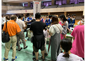
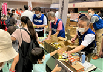
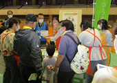

埼玉県と埼玉県生協連、埼玉県とコープみらいが締結している「基本協定」「物資協定」にもとづき、今回で22回目の参加となりました。大野元裕県知事や県議会関係、北本市長、市議会関係の皆さんをはじめ、消防本部、県警、医療、社協など約80機関・団体、約3,500人が参加しました。埼玉県生協連と各生協は、防災フェアでの企画に役職員・組合員15人が参加し、埼玉の生協を広くアピールすることができました。
（参加生協・・・コープみらい、パルシステム埼玉、生活クラブ生協、労済生協、コープデリ連合会）
第43回九都県市合同防災訓練・防災フェア（埼玉県会場）に参加しました
8月28日（日）に第43回九都県市合同防災訓練（埼玉県会場）・防災フェアが、北本総合公園と北本市体育センターを会場に行なわれました。当日は、深谷断層帯・綾瀬川断層を震源とするＭ8.1の地震が発生し、北本市内で震度7の揺れを観測したとの想定のもと、災害対策本部訓練、情報伝達・広報訓練、避難・救護訓練、火災防御訓練、交通対策訓練、ライフライン応急復旧訓練、多数遺体取扱訓練、防災フェアなど、実践的な訓練が実施されました。


救援物資配布訓練（パルシステム埼玉、生活クラブ、労済生協、コープデリ連合会、生協連）

防災クイズ（コープみらい）
救援物資配布訓練として、パルシステム埼玉提供の飲料「キャロっとさん」、生活クラブ生協提供の菓子「サクサクスナック」、労済生協提供の「ウエットティッシュ」を554人に配布しました。コープみらいは、「防災」に関する身近なクイズをおこない、200世帯460人が参加しました。
クイズ参加者には、ミックスナッツを差し上げました。また、ローリングストックを推進するために、カップラーメンを水でもどすやり方など、災害時における使い方等を紹介し、好評でした。